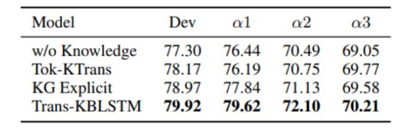

TRANS-KBLSTM : An External Knowledge Enhanced Transformer BiLSTM model for Tabular Reasoning
About
Natural language inference on tabular data is a challenging task. Existing approaches lack the world and common sense knowledge required to perform at a human level. While massive amounts of KG data exist, approaches to integrate them with deep learning models to enhance tabular reasoning are uncommon. In this paper, we investigate a new approach using BiLSTMs to incorporate knowledge effectively into language models.
Through extensive analysis, we show that our proposed architecture, Trans-KBLSTM improves the benchmark performance on INFOTABS , a tabular NLI dataset.
The Tabular Inference Problem
Given a premise table, the task is to determine whether given hypothesis is true (entailment), false (contradiction), or undetermined (neutral, i.e. tabular natural language inference. Below is an example from the INFOTABS dataset:

Here, H1 is entailed, H2 is contradiction and H3 is neutral
Why Knowledge?

Predicting the Gold label correctly requires broad understanding of California is located on the Coast
Challenges and Motivation
The following are the key challenges encountered while working on any tabular reasoning problem:
- Knowledge Extraction
- Knowledge Representation
- Knowledge Integration
◈ Knowledge Extraction
Challenge
KG Explicit (from KNOWLEDGE_INFOTABS) augments the input with With lengthy key definitions that are susceptible to noise and spurious correlations.
Solution: Relational Connections
Semantic Knowledge Graphs represent the relationships between hypothesis and premise token pairs.
To extract relevant knowledge, We use the semantic relational connections between premise and hypothesis tokens.
◈ Knowledge Representation
Challenge
Appending bulky definitions at input introduces unnecessary noise
Solution: Using Sentence Embeddings

Knowledge triples are first converted to sentences (refer to PAPER for more details) and then embedded using Sentence Transformers
◈ Knowledge Integration
Challenge
The main challenge that this work tries to address is the integration of external knowledge word pairs into transformer architecture.
Consider a word pair relation between California and Coast from Conceptnet
If we try to add this relation to transformer, the tokenizer will break apart California into Cal if ornia

Solution: Use BiLSTM Models
BiLSTMs use word level embeddings, hence can easily add word pair relations. In our work we use 300 Dimensional Glove Embeddings
Solution Pipeline
With the solutions prescribed above, we develop the architecture TRANS-KBLSTM

Our full solution pipeline consists of -
- Relational connection retrieval from ConceptNet and Wordnet
- Converting to Phrases and Encoding using Sentence Transformers
- Generation of Relational Attention and embedding matrices
- Using BiLSTM encoders to Encode Premise and Hypothesis
- Multi-Head dot product attention to weight the importance of external knowledge into premise and hypothesis context
- Compose knowledge using attention weights obtained from previous step
- Mean and Max Pool the premise and hypothesis composed vectors
- Combine the pooled embeddings with transformer embeddings
- Apply Regularization and classify into 3 classes
For a more detailed description, please refer to the PAPER
Experimental Results
We observe improvements over pre-established baselines on all test sets of INFOTABS.

We observe significant improvements on limited supervision.
We also observe improvements across different reasoning types
Ablation Studies
We remove the Embedding mix-skip connection and also introduce noise in place of knowledge to observe the decrement. We notice that removing knowledge in α2 and α3 test sets of INFOTABS
We also explore the results on Joint and Independent training where we first train Transformer and then train the BiLSTM encoder with transformer weights freezed.
As always, for a more detailed description, please refer to the PAPER
Conclusion
Our proposed architecture TRANS-KBLSTM shows improvements across all test sets of INFOTABS with the increment being more pronounced in low-data regimes. We believe that our findings will be beneficial to researchers working on the integration of external knowledge to deep learning architectures. The described pipeline can be applicable to Question Answering and Dialogue understanding as well.
TabPert
You should check our EMNLP 2021 paper which is a tabular perturbation platform to generate counterfactual examples.
People
The following people have worked on the paper "TRANS-KBLSTM: An External Knowledge Enhanced Transformer BiLSTM model for Tabular Reasoning":
Citation
Please cite our paper as below.
@inproceedings{varun-etal-2022-trans,
title = "Trans-{KBLSTM}: An External Knowledge Enhanced Transformer {B}i{LSTM} Model for Tabular Reasoning",
author = "Varun, Yerram and
Sharma, Aayush and
Gupta, Vivek",
booktitle = "Proceedings of Deep Learning Inside Out (DeeLIO 2022): The 3rd Workshop on Knowledge Extraction and Integration for Deep Learning Architectures",
month = may,
year = "2022",
address = "Dublin, Ireland and Online",
publisher = "Association for Computational Linguistics",
url = "https://aclanthology.org/2022.deelio-1.7",
pages = "62--78",
abstract = "Natural language inference on tabular data is a challenging task. Existing approaches lack the world and common sense knowledge required to perform at a human level. While massive amounts of KG data exist, approaches to integrate them with deep learning models to enhance tabular reasoning are uncommon. In this paper, we investigate a new approach using BiLSTMs to incorporate knowledge effectively into language models. Through extensive analysis, we show that our proposed architecture, Trans-KBLSTM improves the benchmark performance on InfoTabS, a tabular NLI dataset.",
}Acknowledgement
Authors thank members of the Utah NLP group for their valuable insights and suggestions at various stages of the project; and DeeLIO Workshop reviewers for their helpful comments. Additionally, we appreciate the inputs provided by Vivek Srikumar and Ellen Riloff. Vivek Gupta acknowledges support from Bloomberg's Data Science Ph.D. Fellowship.